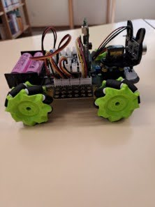
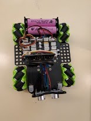
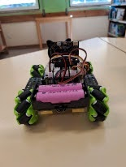
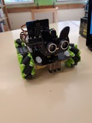

Школьный проект по робототехнике, созданный вместе с одногруппником на базе micro:bit. Робот в форме кота способен двигаться, взаимодействовать с пользователем и самостоятельно реагировать на окружающую среду.
«Оскар» — это интерактивный робот-кот, разработанный в рамках школьного проекта. Мы занимались созданием конструкции, программированием и настройкой различных функций робота. Основная идея проекта — создать небольшого робота, который не просто выполняет команды, а имеет элементы поведения: может двигаться самостоятельно, реагировать на препятствия и взаимодействовать с человеком.
Робототехника / Школьный проект
micro:bit
2 человека
Пульт + автономный режим
2025
1.0
Роботом можно управлять дистанционно, задавая направление движения.
Робот способен самостоятельно передвигаться и обходить препятствия.
На дисплее робота отображаются разные эмоции.
Робот может кивать, создавая эффект живого взаимодействия.
Оскар умеет издавать звуки и реагировать с помощью аудиоэффектов.
Робот может поворачиваться вокруг своей оси для изменения направления.




